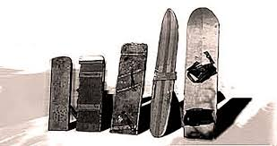

Wir reden heute rund ums Thema Snowboarden.
Die Themen werden sein: Wann wurde das Snowboard erfunden, wie hat es sich entwickelt, wann ist es populär geworden und wie.
Klicke auf mich, um Theos Quellen zu erfahrenDas Snowboard gibt es rund um 1900, aber auf den Markt kam es erst so um 1960.
Die ersten modernen Snowboards, wie wir sie heute kennen mit dem Anschnallen, gab es erst seit 1970.
Hier ein Bild, wie die Snowboards ausgesehen haben:
Die Snowbords waren am anfang nur ein stück holz und haben sich bis heute weiterinteickelt heute sind es meisten aluminum brätter mit schnallen und extra schuhen.
Am anfang wahren es nur holz bretter mit eisen stangen oben drüber.
Dann hat es sich weiter intwickelt andere formen andere materialin und schuhe fürs snowbord.
und schnell kahmen eine art von snowbords die wir kennen also die bretter aus alluminum oder aus stärkerem holz und mit blastic schnallen über denn füßen.